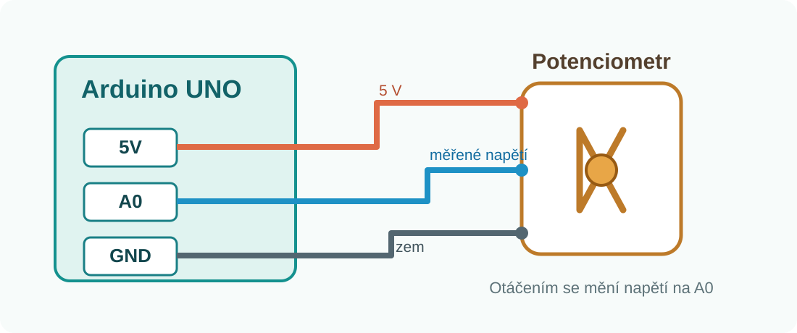
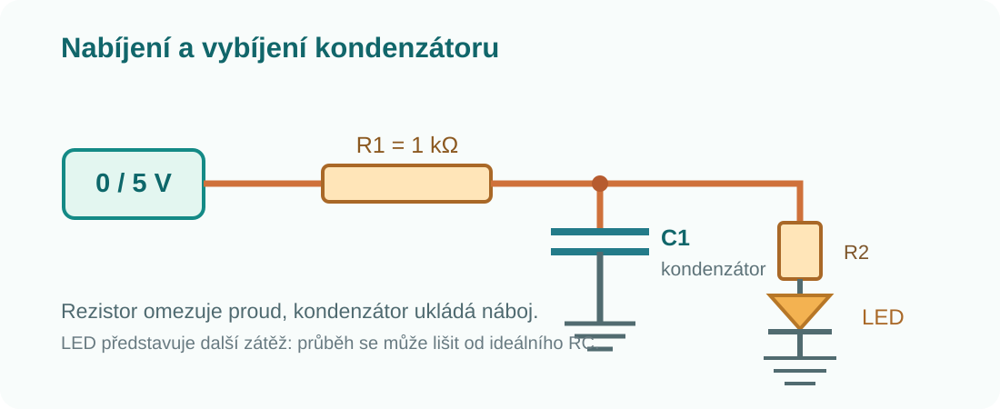
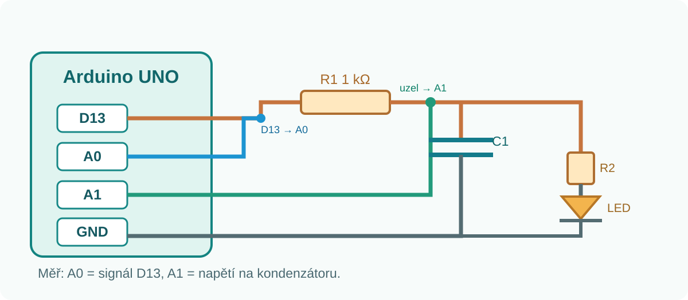

analogRead() → 0
Vstup je na úrovni GND.
Praxe – Arduino | 3. ročník · analogRead(), Serial Plotter a kondenzátor
millis() k měření bez blokování programu.analogRead(), ADC, napětí, 0–1023, A0, sériová linka, 115200 Bd, Serial Plotter, Better Serial Plotter, potenciometr, kondenzátor, RC článek, nabíjení, vybíjení, millis().
Arduino nemusí jen ovládat LED nebo motory. Může také průběžně měřit napětí a posílat výsledky do počítače, kde se ze sloupce čísel stane přehledný graf.
Analogový vstup, například A0, dokáže změřit napětí a analogově-digitální převodník (ADC) ho převede na číslo. U klasického Arduino Uno s výchozí referencí přibližně 5 V získáme hodnotu 0 až 1023.
Vstup je na úrovni GND.
Napětí přibližně v polovině rozsahu.
Horní hranice měřicího rozsahu.

Serial Plotter čte čísla odesílaná přes sériovou linku a vykresluje jejich vývoj v čase. Pro jednoduché průběhy je přímo v Arduino IDE. Pro přenos dat použijeme rychlost 115200 Bd.
Program změří A0 a vypíše číslo přes Serial.println().
Počítač přijme hodnoty na zvoleném sériovém portu.
Plotter pravidelně doplňuje do grafu nové naměřené body.
void setup() {
Serial.begin(115200);
}
void loop() {
int hodnota = analogRead(A0);
Serial.println(hodnota);
delay(20); // pro jednoduchou ukazku omezi rychlost vypisu
}Serial Plotter dokáže zobrazit i několik průběhů najednou. Do jednoho řádku pošli dvě čísla oddělená mezerou. Na konci řádku použij Serial.println().
void setup() {
Serial.begin(115200);
}
void loop() {
int hodnota = analogRead(A0);
Serial.print(hodnota);
Serial.print(' ');
Serial.println(-hodnota);
delay(20);
}Posuň virtuální potenciometr a sleduj hodnotu ADC i napětí. Po spuštění se postupně vykreslují dva kanály: naměřená hodnota a její záporná kopie. Simulace je pouze v prohlížeči, nikoli skutečné měření Arduinem.
512 -512Připraveno. Klikni na Spustit měření.
Pro pokročilé zobrazování můžeš použít také Better Serial Plotter. Pracuje se stejným principem: vybereš sériový port, nastavíš správnou rychlost a sleduješ přicházející hodnoty. Podle verze programu může nabídnout také úpravu měřítka, zvětšování grafu či export dat.
Zvol správný COM/USB port.
Musí odpovídat Serial.begin(115200).
Více hodnot pošli na jeden řádek.
Kondenzátor uchovává elektrický náboj a energii. Při připojení ke stejnosměrnému zdroji přes rezistor se jeho napětí postupně zvyšuje, při vybíjení přes rezistor zase klesá. Typický průběh není přímka, ale zakřivená, přibližně exponenciální křivka.

Zpočátku rychle, později stále pomaleji směrem k napětí zdroje.
Kondenzátor předává uloženou energii do zátěže.
Vyšší odpor nebo kapacita znamenají pomalejší změnu. Jde o ideální RC model.
Změň odpor a kapacitu a sleduj, jak se prodlužuje nebo zkracuje časová konstanta. Graf ukazuje idealizovaný RC obvod; konkrétní zapojení s LED se může chovat jinak.
Připraveno. Vyber Nabíjet nebo Vybíjet.
Nejprve sestav obvod s tlačítkem, LED a rezistorem. Připoj kondenzátor paralelně k LED větvi a sleduj změnu chování. Potom místo tlačítka používej výstup D13 a měř zároveň napětí výstupu i kondenzátoru na analogových vstupech.

unsigned long previousMillis = 0;
const int ledPin = 13;
void setup() {
pinMode(ledPin, OUTPUT);
}
void loop() {
unsigned long currentMillis = millis();
if (currentMillis - previousMillis >= 1000) {
digitalWrite(ledPin, !digitalRead(ledPin));
previousMillis = currentMillis;
}
}Serial.begin(115200), čtení analogRead(A0) a analogRead(A1) a výpis obou hodnot na jediný řádek. Při měření nepoužívej dlouhý delay(), jinak ztratíš průběh mezi vzorky.Nejprve pracuj s potenciometrem a poté sestav obvod s kondenzátorem. Při práci na skutečném zapojení dodrž polaritu a bezpečné napětí.
Změř analogový vstup A0, odešli data přes sériovou linku rychlostí 115200 Bd a zobraz je v Serial Plotteru.
Pošli na jeden řádek dvě čísla: původní hodnotu a její zápornou kopii. Odděl je mezerou.
Vyzkoušej zobrazit hodnoty z potenciometru také v programu Better Serial Plotter.
Postav obvod podle schématu. Nejprve bez kondenzátoru vyzkoušej LED; potom připoj kondenzátor a porovnej chování při zapnutí a vypnutí.
Nahraď tlačítko pinem D13. Každou sekundu změň stav D13 pomocí millis(). Na A0 měř D13, na A1 kondenzátor a obě hodnoty odešli do grafu.
Vrací digitální obraz napětí na analogovém pinu.
Vykreslí postupně přicházející hodnoty z Arduina.
Čísla odděl mezerou a odešli v jednom řádku.
Kondenzátor se nabíjí a vybíjí postupně.
Umožňuje měřit i v době, kdy se jiný výstup přepíná.
Začni samotným potenciometrem: nejprve si ověř napětí a číselný rozsah, pak otevři graf v počítači. Přidej druhý kanál a všimni si formátu odesílaných dat. Teprve potom přejdi na kondenzátor a RC obvod. Nakonec propojíš měření s neblokujícím časováním z předchozí kapitoly.
Praktická rada: Když graf nic nezobrazuje, nejdříve zkontroluj kabel, sériový port, rychlost a to, zda se čísla odesílají pomocí println().
Nejprve odpověz vlastními slovy. Rozbalením si ověříš správnou odpověď.
analogRead(A0) u Arduino Uno?Celé číslo od 0 do 1023, které odpovídá napětí vzhledem k použité referenci.
Napětí kolem 2,5 V.
Protože se průběžně přenáší mnoho naměřených hodnot a vyšší rychlost usnadňuje jejich přenos.
K vykreslení přijímaných čísel do časového grafu.
Na jeden řádek dvě čísla oddělená mezerou, na konci řádku použít println().
Protože sériový port může být otevřený v jiné aplikaci, například v Better Serial Plotteru.
Roste zpočátku rychleji, potom se postupně přibližuje napětí zdroje.
Postupně klesá; v ideálním RC obvodu exponenciálně.
Součin R × C, který charakterizuje rychlost změny napětí.
Aby mohl Arduino mezi přepínáním výstupu průběžně číst analogové vstupy.
Opačná polarita může kondenzátor poškodit a nebezpečně zahřát nebo roztrhnout.
Protože LED a její rezistor představují další zátěž a mění podmínky nabíjení a vybíjení.